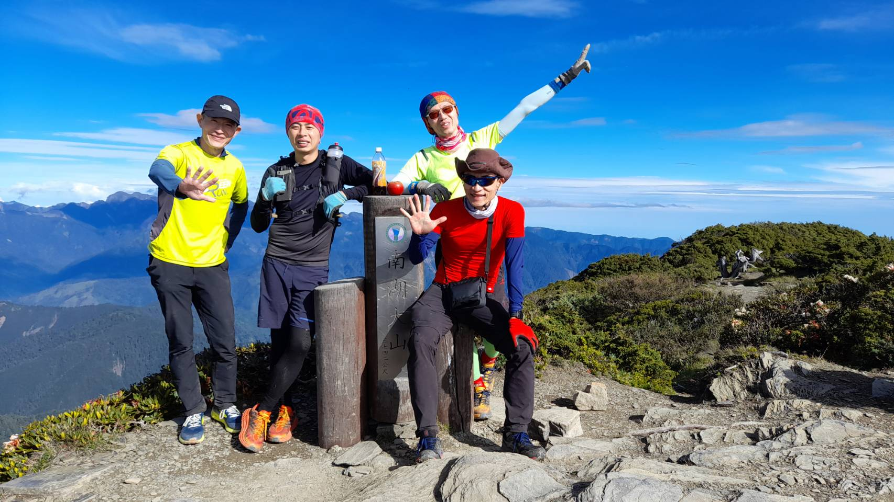
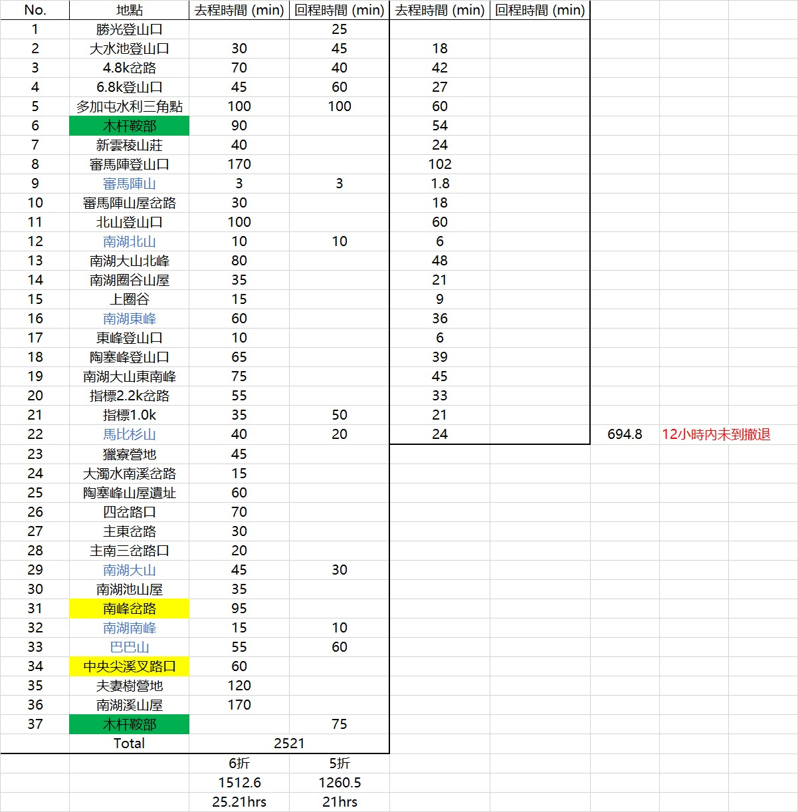
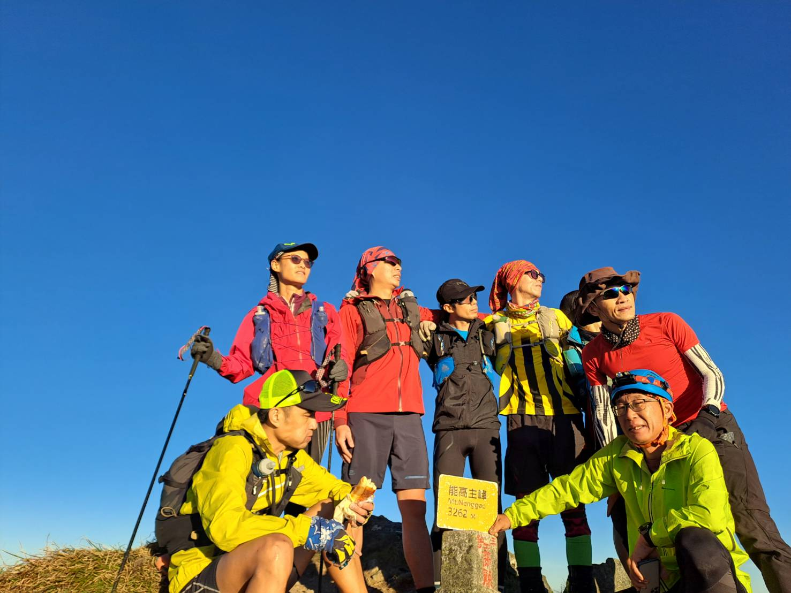
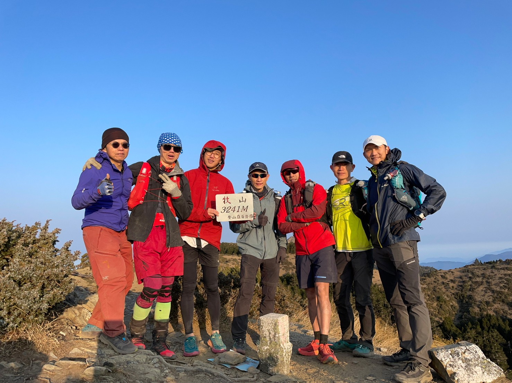
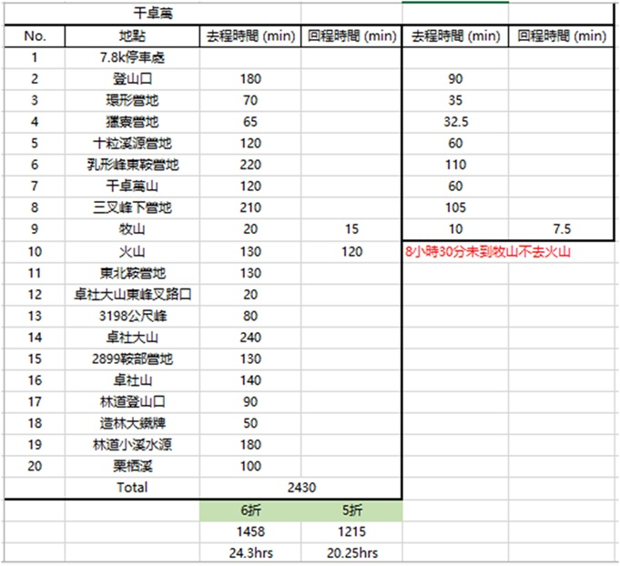
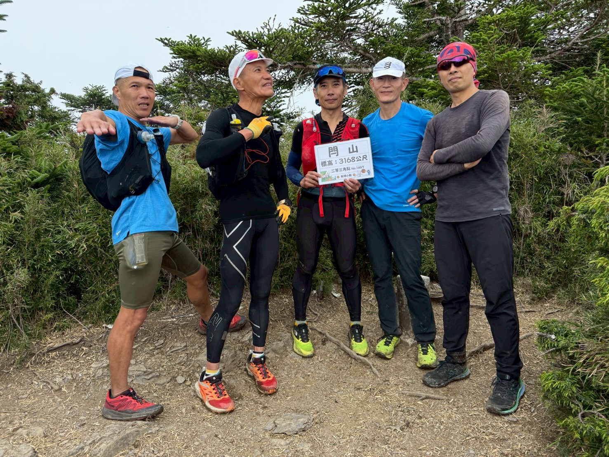
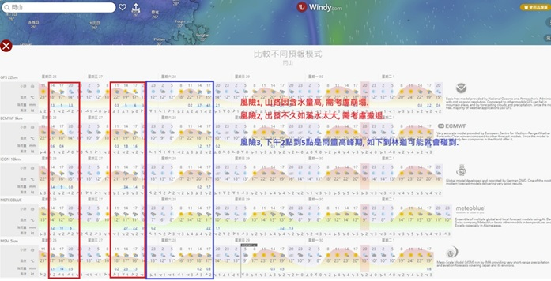
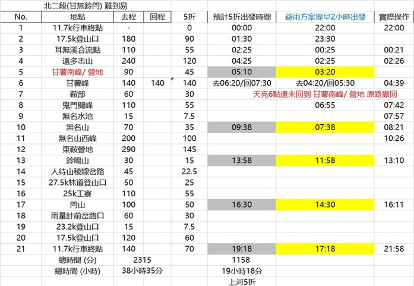

接續之前百岳單攻四大障礙（中央尖、馬比杉山、大小劍、八大秀）後，又從傳統百岳11條縱走路線（北一段、北二段、北三段、南三段、南二段、南一段、雪山西稜、奇萊東稜、干卓萬群峰下武界、馬博橫斷、新康橫斷）中，精選出適合單攻的路線，命名為「 單攻四大魔王 」。這些路線難度更高，爬升更大、距離更長，且主要風險在於需橫渡溪流，地形複雜且行程路線幾乎無重複，無疑增加中途撤退的難度，挑戰者需具備極高的體能與技術。
入選三大條件：
1. 傳統百岳縱走路線：
一般登山客需多日完成的縱走路線，單日完成將顛覆傳統認知。
2. 包含溪流路段：
過溪具季節性限制與安全風險，增加挑戰難度。
3. 上河路線圖時間五折，24小時內可完成：
以專業登山者速度評估，需在24小時內完成縱走。
入選路線：
• 北一段（南湖七百岳，不含中央尖）： 21小時，符合條件。
• 北二段（順時針縱走，甘無鈴閂）： 19小時18分，符合條件。
• 北三段（能高安東軍，屯原進，奧萬大出）： 21小時9分，符合條件。
• 干卓萬群峰下武界： 20小時15分，符合條件。
未入選路線分析：
• 南三段：太遠，不符時限。
• 南二段：29小時30分，超過24小時。
• 南一段：22小時56分（實走21小時22分），無溪流路段且有管制站時間限制 。
• 奇萊東稜：24小時45分（實走26小時32分，缺帕托魯），超時。
• 新康橫斷：太遠，不符時限。
• 馬博橫斷：太遠，不符時限。
• 雪山西稜：24小時5分，略超時限。
結語
單攻四大魔王（北一段、北二段、北三段、干卓萬群峰下武界）不僅考驗體能與技術，更因溪流路段與長距離的挑戰，成為百岳單攻的終極試煉，適合有志挑戰極限的登山者！
北一段：南湖七百岳單攻（不含中央尖）
路線概述
北一段單攻路線避開中央尖，從南湖南峰/中央尖溪木屋叉路直接下切至夫妻樹營地，完成七座百岳（審馬陣山、南湖北山、南湖東峰、馬比杉山、南湖大山、南湖南峰、巴巴山）。全程約21小時，需多次過溪，路線少有重複，撤退困難，挑戰者需具備高體能、耐力及過溪技巧，尤其需在午後雷陣雨前完成過溪以確保安全。
百岳順序與難度要點
1. 審馬陣山（3141m）
從勝光登山口出發，經勝光山、多加屯山，下至木桿鞍部。此段為回程體力夢魘，需特別注意。接著經雲稜山莊，先下後上至審馬
陣叉路，路程起伏大，考驗耐力。
2. 南湖北山（3536m）
從審馬陣山持續上坡，經過審馬陣大草原及山屋叉路，抵達北山叉路。山頂風勢強，建議縮短停留時間以防失溫。
3. 南湖東峰（3639m）
經五岩峰至南湖圈谷上緣。傳統路線下至圈谷，沿南湖山屋後方水源陡上東峰；嘗試捷徑可能更耗時，需謹慎選擇路徑。
4. 馬比杉山（3211m）
本路線最大挑戰！從東峰往陶賽峰方向，經高峰下至馬比叉路口。路標「馬比杉山1.7km」及後續「0.1km」（實際為1.0km）易誤
判距離。
箭竹林路段若前幾天下雨會有潮濕失溫風險，需確保裝備能讓身體乾爽。此段長距離行進極耗體力，到達時腿部負擔極重
。
5. 南湖大山（3741m）
從馬比叉路返回木樁，朝和平南溪1.2km前進（標示為直線距離，實際較遠）。下至溪底後沿布條/疊石前進，正常好天氣溪底無
水，建議在石洞獵寮或石壁水源補水(但非穩定水源)。隨後陡上至南峰叉路，直抵南湖大山。
6. 南湖南峰（3505m）
從叉路陡下至谷底，經繩索進入森林，沿玉山圓柏區下行至岩石區，再上坡至中央尖溪木屋叉路，即達南湖南峰。
7. 巴巴山（3449m）
從南湖南峰往返巴巴山，約需80-120分鐘。返回叉路後陡下至南湖溪，完成七峰。
下切夫妻樹營地與過溪挑戰
完成七峰後，從南湖南峰叉路下切至夫妻樹營地。此段路跡較不明顯，雖有山友補綁布條，仍有迷路風險，建議沿傳統路線返回至安全點再加速衝刺。過溪為關鍵挑戰，需在午後雷陣雨前完成（建議下午5點出發，隔日下午2點前過溪）。因前四峰需摸黑行進，體力耗盡後將考驗耐力。從南湖溪（2200m）回程至木桿鞍部（2515m）、多加屯山（2795m/前峰2711m），爬升約600m，且松楓嶺後可能遇雨，崩塌新路濕滑，對跑者尤為不利。
交通與住宿
• 交通：一般轎車可達勝光登山口，無需接駁，方便進出。
• 住宿：行前可於方便屋休息，下山後若體力透支，可再休息一晚，增加安全性。
注意事項
• 天氣策略：建議提前三週觀察天氣，選擇穩定窗口出發，避免溪水暴漲。
• 裝備建議：確保防滑鞋與防水裝備，箭竹林與過溪路段需注意失溫風險。
• 體力分配：前段摸黑與後段陡坡為耐力考驗，合理分配體力至關重要。
完成記錄參考：
2022/06/04 南湖七百岳（52.5公里/爬升4848公尺，總時間：23小時27分）
6/3 (前一天)
17：26 勝光馬路登山口
18：04 勝光山
18：11 崩塌新路高繞點
18：54 松楓嶺
19：10 多加屯山前峰
19：45 木桿鞍部
20：00 雲稜山莊
21：33 審馬陣山3141M（百岳一）
22：36 南湖北山3536M（百岳二）
23：25 圈谷上頭的叉路木樁
6/4 (當天)
捷徑太早切卡超久
01：06 南湖東峰3639M（百岳三）
01：41 陶賽峰
02：55 馬比叉路
03：40 馬比杉山3211M（百岳四）
04：43 回馬比叉路
07：32 南湖大山3741M（百岳五）
09：12 南湖南峰3505M（百岳六）
09：46 巴巴山3449M（百岳七）
10：24 回叉路
12：34 夫妻樹營地
13：13 南湖溪山屋
14：22 木杆鞍部
16：23 回崩塌新路高繞點
16：46 大水池勝光菜園
16：53 勝光馬路登山口
此次風險評估最大的點是，過南湖溪，天氣預報當天區域下午3點高山會下大雨，因此才會安排如此時間出發，實際溪水過膝到大腿，所以短褲小濕。
|  |
| 南湖大山合照 |
|  |
南湖七百岳撤退點選擇：出發後12小時未到“馬比杉山”
北三段：能高安東軍單攻（屯原進，奧萬大出）
路線概述
北三段單攻從屯原登山口出發，終點為奧萬大，完成五座百岳（能高主峰、能高南峰、光頭山、白石山、安東軍山），全程約21小時9分。路線需多次過溪，崩壁與芒草路段增加風險，挑戰者需具備高體能、過溪技巧及應對潮濕環境的能力。選擇屯原進、奧萬大出，方便下山後住宿與補給，建議前一晚入住奧萬大森林遊樂區（含門票及兩餐），便於休息與盥洗。
百岳順序與難度要點
1. 能高主峰（3262m）
從屯原登山口出發，沿能高越嶺西段前行，需快速通過多處崩壁路段，尤其是10K大崩壁，風險較高。抵達天池山莊（2860m）
後，加速至卡赫爾山（3105m）前，測試
隊友是否能在6小時內抵達第一撤退點。若未達，建議撤退。
芒草/箭竹路段需注意天
氣，選擇前幾天晴朗乾燥的天氣，避免稜線風大及潮濕失溫風險。
2. 能高南峰（3349m）
第二撤退點，需在9小時內抵達。從主峰下坡至低處營地及水源，若體力不足需撤退，需返回路程的爬升段，需謹慎評估。
3. 光頭山（3060m）
從南峰下切至光頭山，注意芒草/箭竹覆蓋的洞穴與突石，避免踩空或撞傷。光頭崩壁路段需穩拉繩索緩慢下降，技術要求不高但需
小心。
4. 白石山（3110m）
途經白石池及白石妹池（2750m），下切後再上坡。可選西邊緩坡路徑（距離較遠但清晰）或獸徑捷徑（較陡但需熟悉路況）。
5. 安東軍山（3068m）
經萬里池（2800m）、屯鹿池及屯鹿妹池（2850m），
此處有活水源，可減少攜帶水量。於屯鹿妹池補水後，卸包直登安東軍
山。
過溪與下切挑戰
完成五峰後，從2850m叉路陡降至萬大南溪支流（2350m），坡度大，對膝蓋負擔重，不擅下坡者需特別注意。抵達溪底後沿支流前行至第二獵寮，天色漸暗，需開啟頭燈。過萬大南溪主流為關鍵挑戰，溪水混濁且深至大腿，需依賴GPX路跡指引，10次以內過溪，頭燈亮度需充足以選擇安全過溪點。最後上切點僅以疊石標示，頭燈亮度至關重要。建議避免「金杏真路」高繞路線，因倒木障礙及路跡不清，夜間找路難度高。
天氣關鍵
天氣是成敗因素，建議提前3-4個月觀察天氣，遇雨即取消。烈日可忍受，風雨則大幅增加失溫與滑倒風險。
交通與住宿
• 交通：隊友於奧萬大國家森林遊樂區集合，17：00後免門票進入，統一接駁至屯原登山口。
• 住宿：提前預訂奧萬大森林遊樂區住宿（含門票及早餐），性價比高，下山後可盥洗休息，確保安全。
注意事項
• 天氣策略：選擇連續晴天出發，避免溪水暴漲及潮濕失溫。
• 裝備建議：高亮度頭燈、防滑鞋、防水裝備，應對過溪與芒草路段。
• 體力分配：前段崩壁與後段陡坡過溪考驗耐力，需合理分配體力。
• 撤退計畫：嚴格遵守第一（6小時）、第二（9小時）撤退點時限，確保安全。
完成記錄參考
2022/09/10 能高安東軍(距離：62.3 公里/爬升 3730公尺， 總時間 21小時38分)
00：30 屯原登山口出發
01：20 雲海保線所
02：57 天池山莊
05：56 能高山主峰3262公尺
08：11 能高南峰3349公尺
09：49 光頭山3060公尺
10：05 光頭崩壁
10：30 白石池
11：38 白石山3110公尺
12：00 萬里池
13：30 屯鹿妹池
14：15 安東軍叉路
14：44 安東軍山3068公尺
15：10 安東軍叉路
15：10 安東軍叉路
15：53 第一次過溪處
17：00 第二獵寮
17：50 萬大南溪
21：12 奧萬大吊橋
21：38 遊客中心（走好漢坡回去很虐）
|  |
| 能高主峰合照 |
 |
能高安東軍撤退點選擇：
第一撤退點出發後6小時未到“能高主峰”
第二撤退點出發後9小時未到“能高南峰”
干卓萬群峰下武界單攻
路線概述
干卓萬群峰下武界單攻路線從萬大林道行車終點出發，經四座百岳（干卓萬山、牧山、火山、卓社大山），最終下切至栗栖溪（800m），全程約20小時15分。相較2017年四天原路來回，單攻下武界挑戰更大，特別是從3369m高點陡降至800m栗栖溪，總落差達2569m，考驗意志力與耐力。路線包含斷崖、拉繩、過溪及長距離林道，需高體能與越野能力。
百岳順序與難度要點
1. 干卓萬山（3284m）
從萬大林道行車終點出發，爬升1000m至十粒溪營地。近期十粒溪水量稀少，僅剩小水流，山上「看天池」多已乾涸，僅牧山池有水，建議攜帶足量水（可帶咖啡濾紙或頭巾粗濾）。隨後 陡上2200m，為行程首個關卡，體力分配至關重要。
2. 牧山（3241m）
干卓萬山登頂後，經斷崖與拉繩路段（天亮時較安全），抵達平緩草原，途經干卓萬三叉峰（3241m，列入285岳）。從卓社大山叉路可加速衝刺至牧山，路徑較平穩，適合跑者。
3. 火山（3258m，又稱萬東山西峰）
行程第二關卡，需嚴格執行撤退時限。牧山登頂後，若無法按時抵達，建議放棄火山。 火山需來回，路程艱難，商業團常安排一天完成牧山+火山，難度極高，需謹慎評估體力。
4. 卓社大山（3369m）
行程最艱難一峰。從火山返回牧山池補水（水質較淺，建議過濾），避免直接切往卓社大山的獸徑（耗時且易迷路）。從干卓萬三叉峰附近進入十八連峰（實際為二十一連峰），先下300m再爬500m至卓社大山東峰下。連峰路段起伏大，重裝隊伍耗時長，輕裝者較具優勢。最後斷崖路段風險高，需注意安全。
下切與過溪挑戰
完成四峰後，從卓社大山（3369m）下切700m至卓社山（2652m），再降500m至武界林道（2100m）。此段需進入越野模式，沿林道快速推進，留意「濁水溪造林中心區」立牌後的布條，切西瓜式下至栗栖溪（800m）。 下坡路長且陡，對耐力與膝蓋負擔極大，易腿軟滑倒。過溪後，武界林道（主線0-6K）2.5K處當時有落石未清理，車輛無法進入，需額外步行6K。
交通與住宿
• 交通：隊友於武界林道（主線0-6K）0K與投71線集合，接駁至萬大林道行車終點。高底盤車或不怕刮損的車輛可開入。
• 住宿：武界林道0K附近有露營區，適合行前或行後休息。
注意事項
• 水源管理：十粒溪與看天池水量不足，牧山池為主要補水點，建議攜帶濾水裝備。
• 天氣考量：選擇連續晴天出發，避免潮濕失溫與滑倒風險。
• 裝備建議：輕裝優先，攜帶濾水器、防滑鞋與高強度繩索，應對斷崖與下坡。
• 撤退計畫：嚴格遵守火山撤退時限，避免因體力不足陷入危險。
• 體力分配：下切栗栖溪與林道長距離對耐力要求極高，需合理分配體力。
完成記錄參考
2023/03/12 干卓萬下武界(距離：43.08公里/爬升：3320公尺，記錄總時間16小時57分)
23：55 萬大林道最後行車點7.8K
02：46 十粒溪（實力溪）
05：05 干卓萬山3284公尺
06：34 牧山3241公尺
08：04 火山3258公尺
09：20 牧山池（從火山返回）
13：38 卓社大山3369公尺
15：17 卓社山2854公尺
15：44 下到武界林道（展開瘋狂下切模式）
16：52 栗溪壩登山口（栗栖溪）<<停止記錄< /p>
17：58 林道崩塌處（2.5K)
18：19 出林道
十粒這個名字由來有許多說法。 有前輩說，以前有5位裸男在溪中洗澡XD，也有人說因為從登山口到營地需爬升1000公尺，能來到這的人都是有實力的，另外好像也有人說小溪本名叫「實力溪」。
|  |
| 牧山合照 |
|  |
干卓萬撤退點選擇：
選擇一，撤退點出發後8小時30分未到“牧山”不去“火山”牧山池補完水後直接往卓社大山
選擇二，撤退點出發後8小時30分未到“牧山”可以去 “火山”但需要原路返回萬大林道
北二段：順時針O繞（甘無鈴閂）單攻
路線概述
北二段順時針O繞（甘薯峰、無明山、鈴鳴山、閂山）全程約19小時18分，地形複雜，包含崩塌、斷崖及過溪路段，風險極高。天氣是成敗關鍵，2022至2025年歷經九次申請才成功出發，需晴天出團以降低濕滑與落石風險。730林道需專業接駁至11.7K起點， 因林道崩塌頻繁，要避開雨季及參考一般山友回報資訊。原計畫14人，因天氣因素縮減至5人，建議避開特別時段出發以確保安全。
百岳順序與難度要點
1. 甘薯峰（3175m）
從730林道11.7K下切（2600m至2200m），沿溪降至1940m森林營地，隨後過耳無溪（水深約腳踝）。建議穿野鞋搭配五指襪快速穿越，避免濕鞋磨腳。 接著爬升至遠多志山（2888m）、甘薯南峰（3156m）營地，卸包後輕裝登甘薯峰。前日降雨導致箭竹濕滑，手套與褲子鞋子全濕，需穿防水外套保持核心溫度。回程上坡類似小劍山短版，耗費體力，於叉路營地大休並補給。
2. 無明山（3451m）
天亮後進入鬼門關斷崖，順時針輕裝爬升降低風險，但需強手臂力量。沿途奇石怪木，中央尖山清晰可見。無名池可補水，但隊友多自揹水源，快速通過直衝山頂，減少停留以節省體力。
3. 鈴鳴山（3272m）
高危險路段！山頂下行經斷崖與崩壁，需確保前隊友抵達落石躲避點後，下一人才可繼續下降。 無名斷崖岩層不穩，持續崩塌至無名山西峰後落石風險才解除。後段為上下坡基本路線，考驗耐力。
4. 閂山（3168m）
順時針最後一峰，雖看似簡單，但距離遠，需經兩座285岳及25K工寮，沿「金明真」路接主線。單攻方向不同，心理與體力壓力大，需保持專注。
回程注意與失誤總結
• 雨量計路徑失誤：計畫走雨量計切回730林道，但岔路不明（雨量計前而非雨量計後），誤走樹林，折返耗時超1小時。
• 高繞點錯誤：730林道高繞點紅線標示誤導，回程無需高繞，卻繞行後折返，耗時約1小時。
• 林道水管破裂：林道變水路，誤以為走錯，最後靠隊友引導脫困。
建議：熟悉GPX路跡，確認雨量計岔路位置，回程避免不必要高繞，攜帶通訊設備以應對突發狀況。
個人補給參考
• 個人補給：水500cc、舒跑590ml×2、泰山十穀寶330g×2、崇德發黑麥汁250ml×2、牛奶粉（林道活水沖泡500cc）、保礦力粉、
鹽糖、咖啡錠。
• 出發前：咖啡卷四片、巧克力蛋糕兩個。
• 建議：乾糧與巧克力需搭配充足水源食用，確認水源前謹慎使用。
交通與住宿
• 交通：隊友於730林道11.7K集合，需專業接駁車（高底盤車輛）。
• 住宿：建議於附近露營區休息，行前後均可使用。
注意事項
• 天氣策略：提前數月觀察天氣，選擇連續晴天出發，避免濕滑與落石風險。
• 裝備建議：防水外套、防滑野鞋、五指襪、高亮度頭燈，應對斷崖與過溪。
• 撤退計畫：嚴格執行“甘薯南峰/營地”撤退時限，確保安全。
• 體力分配：前段過溪與後段斷崖耗能大，合理分配體力至關重要。
完成記錄參考
2025/06/28 北二段順時針O繞 (距離:50.5公里/爬升:4426公尺，記錄總時間23小時58分)
22：00 登山口730林道11.7K
23：02 廢棄機車
00：21 過 “耳無溪” 溪水過腳踝
02：26 遠多志山2880公尺
04：39 甘薯峰3175公尺（百岳）
05：56 返回丟包叉路口
07：42 鬼門關峰3395公尺（285岳）
07：57 無明池
08：21 無明山3451公尺（百岳）
10：26 無明西峰3332公尺（285岳）
13：10 鈴鳴山3272公尺（百岳）
13：51 人待山3114公尺（285岳）
14：04 人待山北峰3074公尺（285岳）
16：11 閂山3168公尺（百岳）
17：42 走過 “雨量計” 後原路繞回
19：34 廢棄機車
21：58 登山口730林道11.7K
|  |
| 閂山合照 |
|  |
北二段 (甘無鈴閂) 時間調整及撤退攻略
天氣預報判斷
|  |
撤退點：早上6點還未回到 甘薯南峰 直接原路返回
比對預估時間，到最後一座閂山差預估約2小時，原本想憑藉越野跑優勢挽回，看起來太天真，當在不熟路況及進入晚上模式時，更難判別。
後記
目前所知超過二十四小時上河五折時間還是有少數幾位高手完成的記錄如下：
➣ 北一段含中央尖： “陳家文”
➣ 雪山西稜： “許松明”